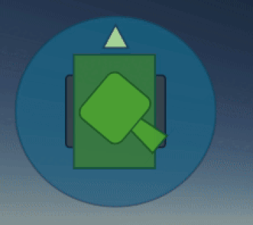

Artillery Test - !WIP!

Details
Role: Gameplay Programmer
Duration: 4 Weeks
Team Size: 1
Engine: Unity [C#]
About
Artillery Test is a study on how a Tank's physics and mechanics can be replicated within C#, within the Unity Engine. The controller features the use of a suspension model, based off Christine Suspension, alongside the use of wheel traction to calculate tank speed.
Introduction
This project was a chance to look into more Advanced Elements of games development, especially within the Unity Engine. While other projects featured within this portfolio feature physics, developing Tank Physics meant that the controller had to feel realisitc and robust in nature. Using idea's such as Hooke's Law to drive forward design and development.
Another advanced element of Unity Development I looked into with this project was the UI Toolkit. Using this I was able to create bindable adaptive UI that changed when flagged by the binded script, keeping the UI and script behaviour seperate while avoiding a need for constant Update checks. Finally, the project features the use of Physics Scenes to simulate the tanks shooting trajectory before it fires.
Suspension

UI Implementation


Shooting

Code
- Fire Prediction
Code
- Weapon Controller